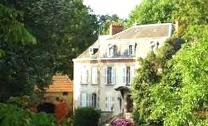
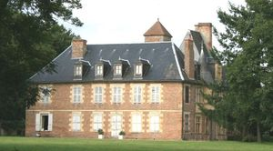
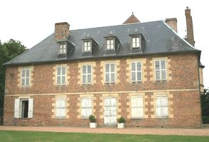
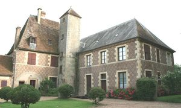
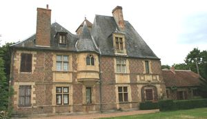
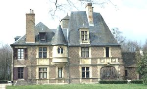

Recensement Jean-Claude Truffet






| Département | 03 — Allier |
| Canton | Moulins |
| Commune | Avermes |
| Type d'édifice | Château |
| Période d'origine | XV-XIX |
Deux château a Avermes, Seganges du XVe siècle et Champfeu du XIXe siècle, SEGANGE, en 1495, ce manoir reçoit la reine Anne de Bretagne, qui, pendant le séjour du roi Charles VIII en Italie, passe quinze mois chez sa belle sur, Anne de Beaujeu, à Moulins. Le seigneur de Seganges est Nicolas Petitdé, argentier du duc Pierrre II de Bourbon. la fille de Nicolas Jeanne épouse Claude de Lyon et Segange passe en 1579 à Jehan Mareschal, son gendre Gilbert, son fils le vend vers 1619 à Jean Feydeau conseiller du roi, son frères Jacques en hérita. En 1630 sa fille Antoinette épousa Claude Chrestien qui l'échangea en 1677 avec d'autres propriétés de la dame Marie Philippes, veuve du baron Bianki, Marie Catherine fille de cette dernière, le laissa à sa nièce Catherine qui épousa François du Broc devient seigneur de Segange par son mariage en mars 1737. Ses descendants resteront propriétaires du château jusquen 1973 dont Louis le Broc de Segange connu pour ses ouvrages d'histoire bourbonnaise. Il est actuellement la propriété de la famille de Tracy.
CHAMPFEU du XVIII- XIXe siècle de style Louis XIII. La Grange-Champfeu est une construction de style Louis XIII. Au XVe siècle, ce lieu était dénommé la Grange-Cadier et appartenait sans doute à une exploitation agricole dépendant de La Brosse-Cadier, la seigneurie voisine. Le 22 août 1444, Jean Cadier, écuyer, racheta les cens qu'y prélevait le chapitre Notre Dame de Moulins: une terre "franche" était en effet de meilleur aloi si l'on voulait la faire passer pour noble. De 1635 à 1684, elle apparteint à une famille Chacaton et fut connue sous le nom de Grange Chacaton, ce furent sans doute eux qui firent édifier la demeure, acquise en 1701 par le maire perpétuel de Moulins, Bernard de Champfeu, qui lui laissa son nom.
Segange, le bâtiment fût construit entre la fin du XV et XVIe siècle. Sans doute maison fortifiée à lépoque féodale, puis château renaissance au XVIe siècle, détérioré pendant la Révolution, Segange prend son aspect actuel au XIXe siècle. subsistent les communs et une tourelle d'escalier englobée dans les constructions Renaissance, se compose d'une aile en retour, à l'extrémité de laquelle s'ouvrait un porche, à l'arc surbaissé, dont les médaillons ont été martelés au cours de la Révolution. Témoignage de la Renaissance Française. La façade sud-est, avec sa haute toiture en ardoise, est ornementée dans le style Renaissance. A lextrémité droite du corps de logis, un arceau de pierre marque lemplacement dune porte cochère jadis le centre dune façade restée inachevée. La tourelle à encorbellement construite au milieu de la façade renferme une chapelle. De chaque côté de cette tourelle, deux bas reliefs portent des traces décussons probablement détériorés pendant la Révolution.
Champfeu, c'est un beau bâtiment de plan rectangulaire à deux niveaux et niveau de comble au pignon duquel est bâtie une tour ronde à entablement pour soutenir un toit conique. La façade est percée de fenêtres disposées
symétriquement à la porte centrale. Le toit couvert en ardoise a reçu des lucarnes à la mode Renaissance.
Famille de François du Broc Famille de Bernard de Champfeu"
Château de Champfeu et de Segange.